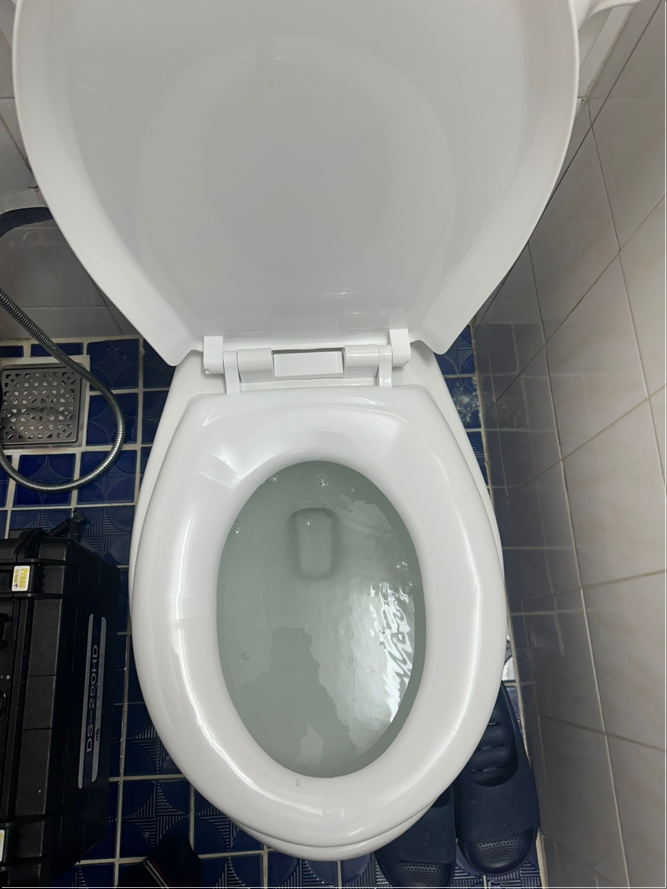
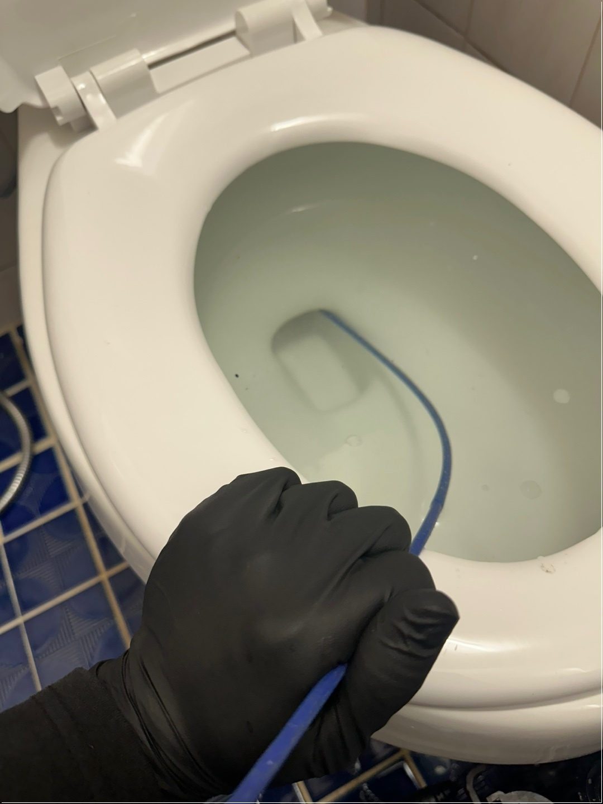
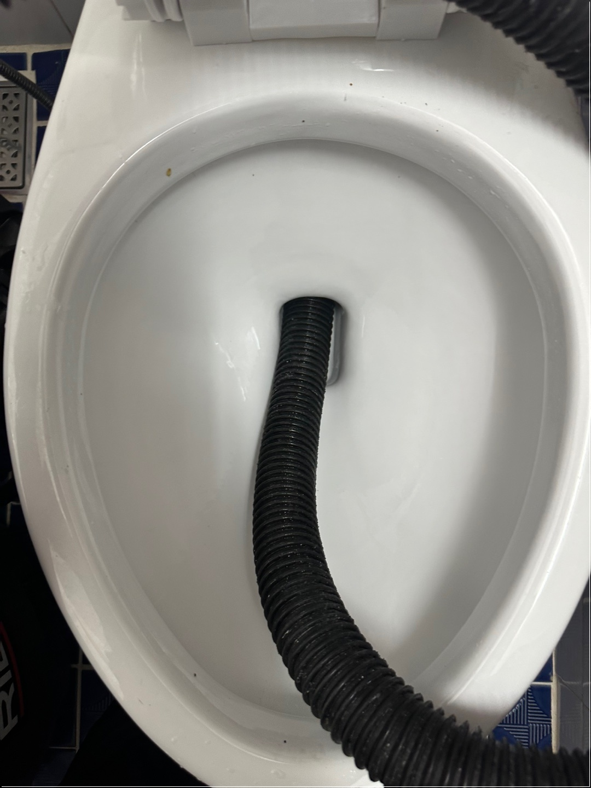
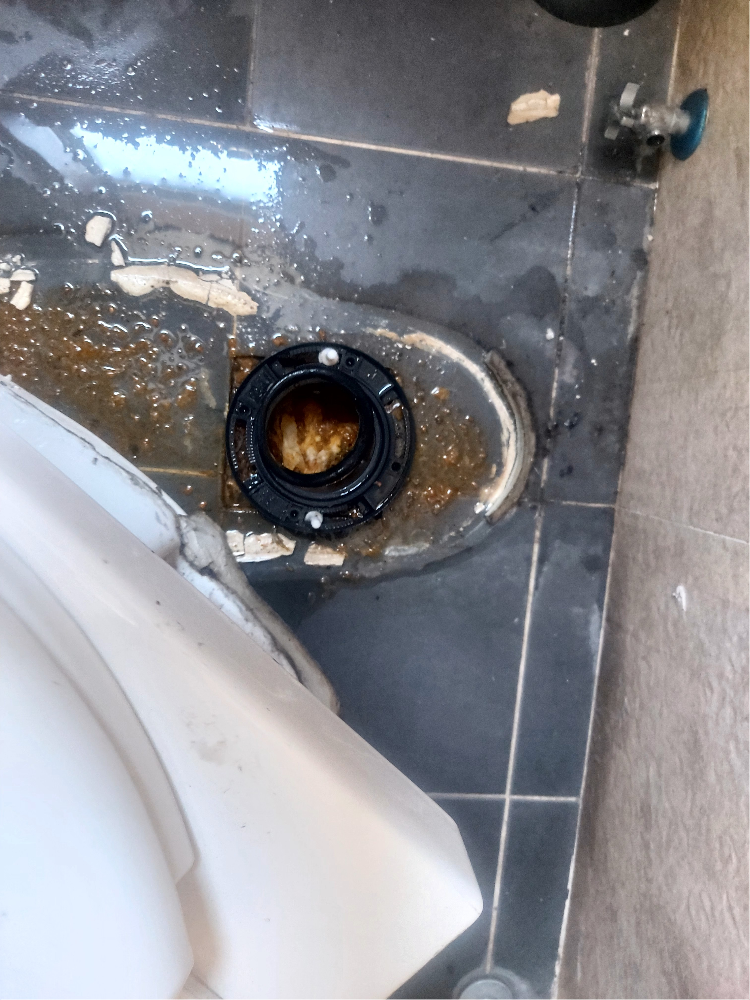
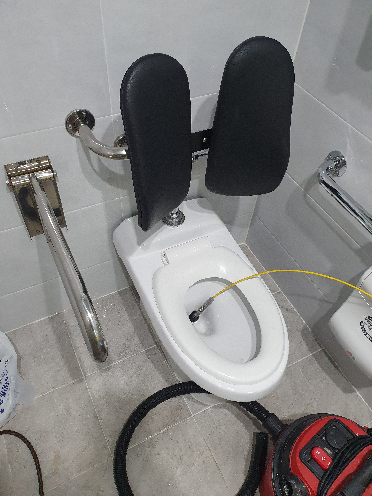

양천구변기막힘 셀프로 해결될까? 전문가 불러야 할까?

아침부터 변기가 막혀버렸다?! 진짜 하루 시작부터 멘붕 올 수 있는 상황이죠. 양천구에 살고 계신 분들이라면 이런 일, 한두 번 겪어보셨을 거예요. 특히 목동, 신정동, 신월동 같은 주택 밀집 지역은 오래된 배관 문제로 생각보다 변기 막힘 신고가 잦다고 하네요~ 👀 근데 문제는! 단순히 물이 안내려가는 게 아니라, 역류하거나 물내림 소리만 나고 내려가지 않는 현상까지 다양하다는 점!  변기가 막히는 이유는 생각보다 다양해요. 간단히 정리해보면... 물티슈, 여성용품 등 이물질 투입 → 특히 어린 아이 있는 집은 변기 안에 장난감 들어간 경우도 많죠 🤦 배관 내부에 쌓인 오물 → 오래된 아파트는 배관 내부가 좁아져서 자주 막혀요. 배관 경사 불량 또는 구조 문제 → 물은 중력으로 흘러야 하는데, 배관이 평평하거나 거꾸로 되어 있으면? 물이 약하게 내려가는 저수압 문제 → 물탱크식 변기는 부품 고장일 수도 있어요! 솔직히 말하면 양천구변기막힘이 가벼울 때는 셀프 처치도 가능해요. 양천구 마트나 다이소 가면 뚜러뻥이나 배관세정제 쉽게 살 수 있거든요! 플런저 사용 팁: ▶ 먼저 물을 살짝 담고 ▶ 플런저로 강하게 ‘푹푹’ 눌러주면 압력으로 막힌 걸 뚫을 수 있어요! 배관세정제: ▶ 뜨거운 물과 함께 사용하면 기름때, 오물 녹이는 데 효과 있어요~ 하지만 여기서 포인트! 두세 번 해도 안 뚫리면 무조건 전문가 불러야 합니다 ⚠️ 괜히 무리해서 하다 보면, 변기 넘치고 바닥까지 물난리 납니다... (진짜 경험담입니다…💦)
양천구 변기막힘, 전문가를 부르면 뭐가 좋을까?

✅ 30분 이내 빠른 방문 (양천구 전 지역 커버!)
✅ CCTV 내시경 장비로 정확한 막힘 원인 파악
✅ 고가의 최신 샤프트로 완벽하게 뚫고, 재발 방지도 가능
✅ 합리적인 가격, 현장 견적으로 투명한 안내!
특히 하수구, 싱크대, 욕실 배수구까지 연결된 문제일 경우
일반인이 해결하기는 불가능에 가깝고,
오히려 숨은 누수나 역류 원인을 못 보면 큰 사고로 번질 수 있어요 😨
양천구는 지역 특성상 단독주택과 오래된 아파트가 혼재돼 있어서
배관 구조도 다양하고 복잡한 편이에요.
그래서 인터넷 보고 따라하다간
오히려 손해 보는 경우도 많죠…
“유튜브 보고 따라했다가 변기 분해까지 갔다”는 분도 봤어요 ㅋㅋㅋ 🤣
동네 기반 업체를 부르면
✔ 위치 빨리 파악하고
✔ 적절한 장비 바로 투입하고
✔ 익숙한 구조라 작업도 빠릅니다!

양천구 전 지역을 커버하는 전문업체는
신월동, 신정동, 목동, 오목교, 등촌 인근까지 빠르게 출동해요.
특히 아침 출근 전, 저녁 퇴근 후
갑자기 변기물이 안내려갈 때!
그 조급함 아시죠? 😭
“고객님, 30분 내로 도착합니다!”
이 한마디만 들어도 마음이 놓여요.
전문가는 뚫는 게 ‘일’이 아닙니다.
원인을 찾아서,
재발 방지까지 하는 것이 진짜 일이에요.
🧰 사용하는 장비들 예시:
고압 공기압력기: 순간 압력으로 깊숙한 막힘 제거
CCTV 내시경: 배관 내부 상태 실시간 확인
전동 스프링 드레인: 깊은 오염물 제거에 탁월
고압세척기: 오래된 찌든 때, 기름기 완벽 제거
이런 장비는 일반인이 갖추기도 어렵고,
설령 있더라도 잘못 쓰면 배관이 깨질 수도 있어요!
직접 하다 보면 어떤가요? 👉 인터넷 검색 → 뚜러뻥 구매 → 세정제 구매 → 안 돼서 배관 청소 도구 구매 → 유튜브 보며 분해 시도 → 결국 포기하고 전문가 부름... 결국 비용은? 더 들어갑니다 😵💫 전문가는 딱 봐서 원인을 파악하고, 불필요한 시도 없이 바로 해결합니다. 시간도 돈이고, 정신 건강도 돈입니다!
단순히 "뚫었어요~ 끝!"이 아니라 “이러이러한 원인으로 막혔고, 여긴 조심하셔야 해요”라고 사후 관리 팁까지 알려주는 경우가 많습니다. 특히 이런 상황이면 꼭 전문가를 부르세요: 변기에서 물은 내려가는데 ‘꼴깍’ 소리만 남 여러 번 시도했는데도 계속 막힘 욕실 바닥 배수구까지 물이 역류함 뭔가를 떨어뜨린 기억이 있음 (물티슈, 여성용품, 장난감 등) 이런 상황은 대부분 표면적인 문제가 아니라 배관 구조 깊은 곳에 문제가 있는 경우가 많거든요.
양천구에서 변기막힘 문제를 겪고 있다면 당황하기보다는 먼저 침착하게 상황을 파악하는 것이 중요합니다. 대부분의 변기막힘은 일상생활 중 무심코 흘려보낸 물티슈, 여성용품, 휴지 뭉치, 심지어는 장난감 같은 이물질에 의해 발생하는 경우가 많습니다. 양천구는 목동, 신정동, 신월동 등 다양한 주거 형태가 혼재해 있는 지역으로, 특히 오래된 아파트나 단독주택의 경우 배관 노후화로 인해 변기막힘 문제가 자주 발생할 수 있습니다. 단순히 물이 천천히 내려가는 수준이라면 가벼운 막힘일 수 있지만, 물이 아예 내려가지 않거나 오히려 역류하는 상황이라면 이미 심각한 상태로 볼 수 있습니다. 이런 상황에서 가장 많은 분들이 시도하는 것이 뚜러뻥이나 배관 세정제 사용이지만, 셀프 방법으로 해결되지 않는 경우도 많기 때문에 상황을 더 악화시키기 전에 전문가의 도움을 받는 것이 현명한 선택입니다. 특히 양천구 지역을 중심으로 활동하는 변기막힘 전문 업체들은 해당 지역의 배관 구조나 문제 유형에 익숙하기 때문에 빠르고 정확한 진단과 처리가 가능합니다. 전문가를 부르면 단순히 막힌 것을 뚫는 것에 그치지 않고, 배관 내시경을 이용해 막힘의 원인을 정확히 파악하고 재발 방지를 위한 조치까지 함께 진행해줍니다. 또한, 고압세척기나 전동 스프링 같은 전문 장비를 사용하기 때문에 집에서 할 수 있는 간이 처치보다 훨씬 효과적이고 지속적인 해결이 가능하다는 장점이 있습니다. 무엇보다 스스로 해결하려다 문제가 악화되어 변기 분해나 배관 누수 같은 추가 비용이 발생하는 상황을 방지할 수 있습니다. 실제로 양천구에서 자주 발생하는 사례 중 하나는 변기에서 물이 내려가는 듯하지만 천천히 빠지거나, 소리만 나고 내려가지 않는 현상인데 이는 대부분 부분 막힘으로, 곧 완전 막힘으로 이어지는 전조증상입니다. 이때 초기에 전문가를 부르면 비용도 적게 들고 시간도 절약되지만, 이를 무시하고 방치할 경우 역류로 인해 욕실 전체가 물바다가 되거나, 악취가 집 안 가득 퍼지는 불쾌한 상황이 발생할 수 있습니다. 따라서 단순히 당장의 막힘만 해결하려고 하기보다는,  근본적인 원인을 진단하고 안전하게 문제를 처리할 수 있는 지역 기반 전문가에게 맡기는 것이 장기적으로 훨씬 더 경제적이고 효율적인 선택입니다. 양천구는 배관 구조가 복잡한 오래된 주택과 다세대 주택이 많기 때문에 경험이 풍부한 전문가의 도움이 더욱 필요한 지역이며, 믿을 수 있는 업체를 통해 정확한 진단과 신속한 조치를 받는다면 번거로운 문제를 손쉽게 해결할 수 있습니다. 변기막힘은 사소한 문제 같아 보여도 일상에 큰 불편을 주는 문제이므로, 빠르고 정확한 대처가 무엇보다 중요합니다. 오늘도 양천구 지역에서 변기막힘으로 고민하고 있다면, 혼자 끙끙 앓기보다 전문가의 손길을 받아보세요. 문제는 빨리 해결될수록 비용도 적고 마음도 편해진다는 사실을 잊지 마세요.
변기막힘

많은 사람들이 변기막힘이 생겼을 때 가장 먼저 드는 생각은 ‘일단 내가 한번 해결해보자’입니다. 뚜러뻥 하나 사서 몇 번 눌러주면 되지 않을까 싶고, 유튜브에 나오는 셀프 배관 청소 영상 몇 개 보면 왠지 나도 할 수 있을 것 같은 자신감이 생기기도 하죠. 실제로 마트나 다이소에서 플런저나 배관 세정제를 구입해 시도해보는 경우가 많은데, 문제는 생각보다 이게 그렇게 단순하지 않다는 데 있습니다. 첫 번째 단점은 ‘상황 파악이 정확하지 않다’는 겁니다. 전문가들은 막힘의 정도나 위치, 원인을 육안이나 장비로 정확하게 파악하지만, 일반인은 대부분 “그냥 안 내려간다”는 단순한 현상만 보고 판단하죠. 그래서 물이 안내려가니까 일단 뚫어보자며 무작정 뚜러뻥을 사용하는데, 이게 오히려 상황을 악화시키는 경우도 많습니다. 예를 들어, 이물질이 배관 중간에 걸려 있는 상태에서 계속 압력을 주면, 그 이물질이 더 깊숙이 들어가거나 아예 배관을 틀어막아버릴 수 있어요. 두 번째 단점은 ‘적절한 장비가 없다’는 겁니다. 집에 있는 플런저는 대부분 일반적인 압력을 주는 정도이기 때문에 깊은 막힘이나 고형물, 오래된 기름 때 같은 복합적인 막힘엔 효과가 거의 없습니다. 고압세척기나 전동스프링, 내시경 장비가 있어야 정확한 처리가 가능한데, 이런 장비를 보유한 일반 가정은 거의 없죠. 그래서 결국은 여러 번 시도하다가 포기하게 되는데, 이 과정에서 시간과 체력만 소모되고 스트레스는 커지게 됩니다. 세 번째는 ‘잘못된 방법으로 오히려 더 큰 고장을 유발할 수 있다’는 겁니다.  특히 유튜브 영상만 보고 변기 탱크를 분해하거나 배관을 직접 건드리는 경우, 부속이 파손되거나 물이 샐 수도 있고, 배관 자체에 금이 가는 등의 문제가 생길 수 있어요. 실제로 어떤 분은 하수구를 직접 뚫어보겠다고 청소 와이어를 무리하게 넣었다가 배관이 틀어져서 전체를 교체하게 된 사례도 있습니다. 수리비용만 수십만 원이 넘었다고 하더군요. 네 번째 단점은 ‘시간이 너무 오래 걸린다’는 점입니다. 평소에 배관 구조를 알고 있다면 빠르게 해결할 수 있지만, 대부분은 이게 어디로 연결되는지조차 모르기 때문에 헤매기 시작하면 반나절이 금방 지나갑니다. 물은 안 내려가고, 냄새는 올라오고, 인터넷으로 검색하고 영상을 보며 혼자 뚝딱거리는 그 시간이 얼마나 비효율적인지 나중에야 깨닫게 됩니다. 마지막이자 가장 중요한 단점은 ‘재발 가능성이 매우 높다’는 겁니다. 셀프로 뚫었다고 생각했지만 사실은 막힘이 완전히 제거되지 않고 일부만 지나갈 수 있도록 뚫린 상태라면, 며칠 내 다시 막히거나 더 심한 역류가 발생할 수 있습니다. 일시적인 해결로는 근본적인 문제를 잡을 수 없다는 걸 많은 분들이 경험으로 체감하게 됩니다. 결국 처음엔 비용 아끼겠다고 혼자 시도했지만, 시간이 지날수록 문제는 더 커지고, 스트레스도 쌓이고, 결국은 전문가를 불러야 하는 상황으로 가게 됩니다. 그리고 전문가가 오면 흔히 하는 말이 “아… 아예 손 안 대고 바로 부를 걸…”이라는 후회 섞인 말입니다. 물론 간단한 막힘이라면 셀프로 해결이 가능할 수도 있지만, 그 판단 기준 자체가 명확하지 않은 일반인 입장에선 애초에 확실한 해결을 위해 전문가에게 맡기는 것이 더 현명한 선택이 될 수 있습니다. 특히 변기는 위생과 직결된 공간이기 때문에, 잘못 건드렸다가 집 전체에 냄새가 퍼지거나, 오수가 넘쳐버리는 상황이 발생하면 금전적인 손실은 물론, 멘탈도 크게 흔들릴 수 있습니다. 무조건 전문가만이 답은 아니지만, 적어도 직접 해결을 시도할 땐 리스크를 감안해야 하고, 실패했을 경우 빠르게 전환할 수 있는 결단력이 필요합니다.
결론

변기 막힘은 예고 없이 찾아옵니다. 특히 아침 출근 준비로 바쁜 시간이나, 저녁에 가족들이 다 같이 사용하는 시간대에 갑자기 물이 안 내려가면 정말 난감하죠. 물이 고여서 넘칠까 조마조마하고, 혹시 냄새라도 올라올까 봐 더 불안해지고, 이런 상황이 반복되면 집안 분위기까지 싸해지는 게 현실입니다. 특히 양천구처럼 오래된 아파트와 빌라가 밀집된 지역은 배관이 낡거나 구조적으로 막힘이 자주 발생할 수밖에 없습니다. 신정동, 신월동, 목동, 오목교, 까치산 등 양천구 전역에서 변기막힘 관련 문의가 꾸준히 들어오는 이유도 바로 여기에 있습니다. 그런데 많은 분들이 처음엔 ‘이 정도는 내가 해결할 수 있겠지’ 하며 플런저나 세정제를 들고 고군분투합니다. 하지만 생각보다 쉽게 해결되지 않는 경우가 훨씬 많고, 오히려 더 큰 문제를 만드는 경우도 적지 않죠. 이물질이 더 깊이 밀려 들어가거나, 무리하게 압력을 가하다가 역류하거나, 심하면 바닥까지 오수가 새어나오는 경우도 발생합니다. 이런 상황이 되면 더는 미룰 수 없습니다. 그럴 땐 주저하지 마시고, 010-3463-4474로 바로 연락 주세요. 저희는 양천구 지역 전문 변기막힘 해결 서비스로, 현재 고객님 댁과 가장 가까운 기사님이 최대한 빠르게 30분 이내 방문할 수 있도록 시스템을 운영 중입니다. 단순히 뚫기만 하는 것이 아니라, 배관 내부 상태를 정확히 파악하고, CCTV 내시경 장비를 활용해 원인까지 분석합니다. 고압 세척기나 전동 드레인 장비를 이용해 단단히 막힌 오염물까지 완전히 제거하기 때문에, 같은 문제가 반복되지 않도록 근본부터 해결합니다. 또한 비용 부분도 투명하게 운영합니다. 방문 전 상담을 통해 예상 견적을 안내드리고, 현장에서 정확한 상황을 보고 나서야 최종 비용을 확정하기 때문에 불필요한 추가 비용 걱정도 없습니다. 일반적인 변기막힘의 경우 5만원~ 해결되는 경우가 많아 많은 고객분들이 “생각보다 저렴하고 확실하게 처리돼서 만족스럽다”는 말씀을 해주십니다.
무엇보다 저희는 양천구 지역에 특화된 경험을 바탕으로, 단순히 기술적으로 처리하는 것에 그치지 않고, 고객님의 입장에서 불편함을 최소화하는 응대와 사후 관리까지 책임집니다. 실제로 고객님들이 가장 많이 하시는 말씀이 “처음부터 전문가를 불렀으면 이틀 동안 이 고생 안 했을 텐데요…”입니다. 그렇기 때문에, 만약 지금 변기에서 물이 잘 안내려가거나, 아예 막혀서 물을 내릴 수 없는 상황이라면, 또는 소리만 나고 내려가지 않거나 물이 고여 있는 상태라면, 절대로 혼자 해결하려고 시간을 낭비하지 마시고, 지금 바로 010-3463-4474로 연락 주세요. 평일, 주말, 공휴일 상관없이 최대한 빠르게 도착해 드립니다. 저희는 하루에도 수십 건의 막힘 문제를 해결하며, 그 중 절반 이상이 “셀프로 하다가 안 돼서 부른 케이스”입니다. 하지만 그 과정에서 이미 문제가 더 악화되어 시간과 비용이 더 들어가는 경우도 많죠. 처음부터 저희처럼 숙련된 전문가를 부르면 시간도 절약, 비용도 절약, 스트레스도 줄일 수 있습니다. 🔧 변기 막힘은 단순한 불편이 아니라, 위생 문제, 일상 스트레스, 긴급 상황으로 이어질 수 있는 만큼 빠른 대응이 필요합니다. 📍양천구 전역 어디든 가능하며, 신속 정확한 작업으로 만족을 드릴 자신이 있습니다. 📞 지금 바로 010-3463-4474로 연락 주세요. 당신의 집을 다시 쾌적하게 만들어드리겠습니다.
FAQ
변기에서 물은 내려가는데 계속 물이 고여 있어요. 막힌 건가요?
네, 부분 막힘일 가능성이 높습니다. 물은 내려가긴 하지만 평소보다 천천히 내려가거나, 물이 한 번 고였다가 갑자기 ‘꿀꺽’ 소리 나며 내려간다면 이물질이 배관 중간에 걸려 있는 상태일 수 있어요. 시간이 지날수록 완전히 막혀버릴 수 있기 때문에, 010-3463-4474를 통해 점검 받는 걸 추천드립니다! 🚨
양천구 하수구 막힘은 어떤 경우에 고압세척이 필요한가요?
기름때, 머리카락, 비누 찌꺼기, 오래된 오염물질 등으로 배관 내부가 완전히 막혔을 경우에는 고압세척이 필요합니다.
악취가 심하고 물이 전혀 내려가지 않는다면 즉시 고압세척을 고려해야 합니다.
물티슈 한 장쯤은 괜찮지 않나요?
아뇨! 물티슈는 절대 안됩니다 ❌ 물티슈는 ‘물에 녹지 않는 재질’이라서 한 장만 들어가도 배관에 걸려 다른 오물과 엉켜 덩어리가 됩니다. 특히 물티슈 + 기름기 + 머리카락이 만나면… 말 안 해도 아시죠? 😱
집에서 변기 뚫는 방법이 뭐가 제일 효과적이에요?
가장 기본적이고 효과적인 방법은 ‘뚜러뻥(플런저)’ 사용이에요. 단, 사용법도 중요합니다! 물을 어느 정도 채운 상태에서 플런저를 ‘밀착’시켜 강하게 ‘푹푹’ 압력을 주며 눌러줘야 합니다.
변기랑 하수구, 둘 다 막혔을 땐 어디부터 고쳐야 해요?
상황에 따라 다르지만, 보통 하수구부터 점검합니다. 왜냐면 변기막힘이 아니라 공용 배관이나 메인 하수도 라인 막힘일 수도 있거든요. 이 경우 변기만 뚫어도 다시 역류하거나 재막힘이 발생합니다 💥 🛠 전문가가 오면 내시경 장비로 정확히 어디가 문제인지 확인 후 가장 시급한 쪽부터 뚫게 됩니다!
양천구 막힘 해결 범위
| 작업가능지역 | 변기막힘 | 싱크대막힘 | 하수구막힘 |
|---|---|---|---|
| 신정동 | 신정동 변기막힘 | 신정동 싱크대막힘 | 신정동 하수구막힘 |
| 목동 | 목동 변기막힘 | 목동 싱크대막힘 | 목동 하수구막힘 |
| 신월동 | 신월동 변기막힘 | 신월동 싱크대막힘 | 신월동 하수구막힘 |
| 목1동 | 목1동 변기막힘 | 목1동 싱크대막힘 | 목1동 하수구막힘 |
| 목2동 | 목2동 변기막힘 | 목2동 싱크대막힘 | 목2동 하수구막힘 |
| 목3동 | 목3동 변기막힘 | 목3동 싱크대막힘 | 목3동 하수구막힘 |
| 목4동 | 목4동 변기막힘 | 목4동 싱크대막힘 | 목4동 하수구막힘 |
| 목5동 | 목5동 변기막힘 | 목5동 싱크대막힘 | 목5동 하수구막힘 |
| 신월1동 | 신월1동 변기막힘 | 신월1동 싱크대막힘 | 신월1동 하수구막힘 |
| 신월2동 | 신월2동 변기막힘 | 신월2동 싱크대막힘 | 신월2동 하수구막힘 |
| 신월3동 | 신월3동 변기막힘 | 신월3동 싱크대막힘 | 신월3동 하수구막힘 |
| 신월4동 | 신월4동 변기막힘 | 신월4동 싱크대막힘 | 신월4동 하수구막힘 |
| 신월5동 | 신월5동 변기막힘 | 신월5동 싱크대막힘 | 신월5동 하수구막힘 |
| 신월6동 | 신월6동 변기막힘 | 신월6동 싱크대막힘 | 신월6동 하수구막힘 |
| 신월7동 | 신월7동 변기막힘 | 신월7동 싱크대막힘 | 신월7동 하수구막힘 |
| 신정1동 | 신정1동 변기막힘 | 신정1동 싱크대막힘 | 신정1동 하수구막힘 |
| 신정2동 | 신정2동 변기막힘 | 신정2동 싱크대막힘 | 신정2동 하수구막힘 |
| 신정3동 | 신정3동 변기막힘 | 신정3동 싱크대막힘 | 신정3동 하수구막힘 |
| 신정4동 | 신정4동 변기막힘 | 신정4동 싱크대막힘 | 신정4동 하수구막힘 |
| 신정6동 | 신정6동 변기막힘 | 신정6동 싱크대막힘 | 신정6동 하수구막힘 |
| 신정7동 | 신정7동 변기막힘 | 신정7동 싱크대막힘 | 신정7동 하수구막힘 |